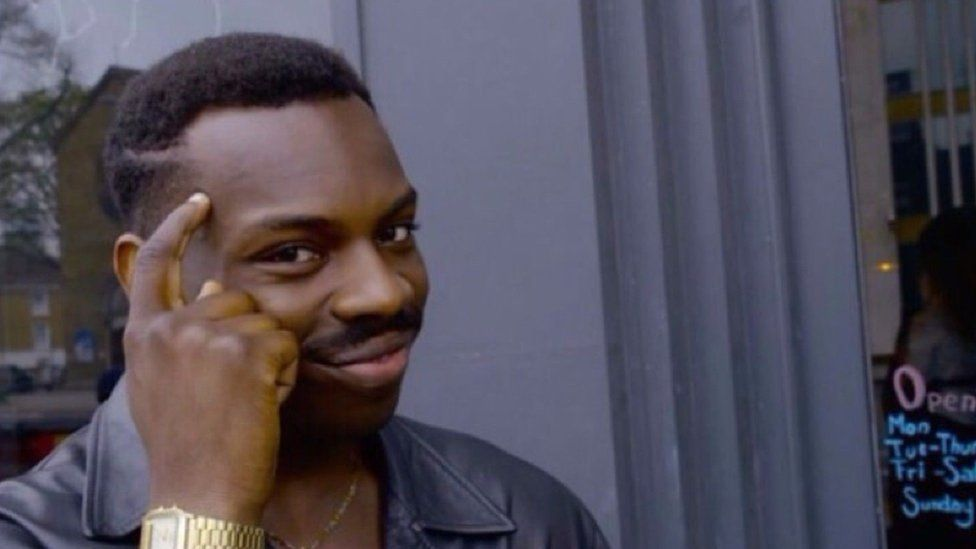

Obama giving a medal to Obama (lol)
Obama giving a medal to Obama (lol)
|

The guy pictured is Reece Simpson, a.k.a. Roll Safe,
a character created by the British filmmaker and actor Kayode Ewumi.
|
|
Chvrches - a Scottish synth-pop band from Glasgow,
formed in September 2011 (from left to right: Martin Dorothy, Lauren Mayberry and Iain Cook)
|
Distracted boyfriend (lmao)
|